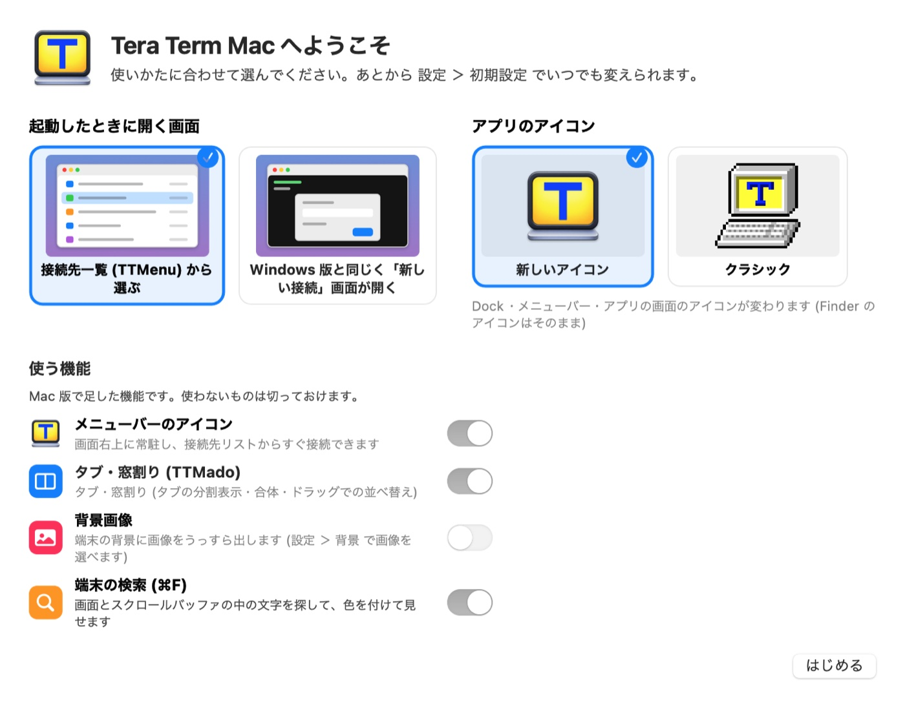
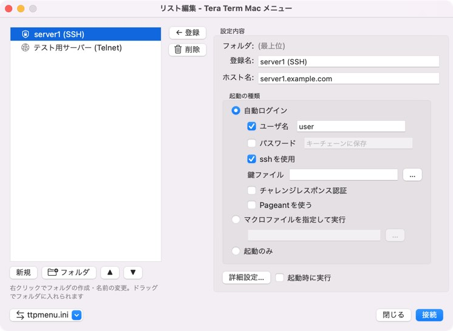

起動と終了、アップデート
初めて起動したとき (初期設定)
初めて起動すると「Tera Term Mac へようこそ」の画面が出ます。使いかたに合わせて選んで、[はじめる] を押します。
- 起動したときに開く画面: 接続先一覧 (TTMenu) から選ぶか、Windows 版と同じく「新しい接続」画面が開くか
- アプリのアイコン: 新しいアイコンか、寺西さん作のクラシックアイコンか (Dock・メニューバーのアイコンが変わります)
- 使う機能: メニューバーのアイコン、タブ・窓割り (TTMado)、背景画像、端末の検索 (⌘F)。使わないものは切っておけます

絵を押すと選べます。あとから 設定 > 初期設定 でいつでも変えられます (設定画面のデザインもここで選べます)
起動すると
- Tera Term Mac を起動すると、接続先の一覧 (TeraTerm Menu のリスト編集) が開きます (初期設定で「端末と新しい接続」を選んだときは、端末と新しい接続の画面)。はじめは空です。
- すぐにつなぐときは、⌘N (ファイル > 新しい接続...) を押します。続きは「SSH でサーバーにつなぐ」へ。

起動すると開く接続先の一覧 (例の接続先を 2 つ登録したところ)。登録のしかたは「よく使う接続先を登録する」へ
メニューバーのアイコンと終了
画面のいちばん上のメニューバーの右側に、Tera Term Mac のアイコンが出ます。ウィンドウを全部閉じてもアプリは終わらず、このアイコンから接続先を選べます。
アプリを終わるときは ⌘Q を押します。接続中のウィンドウがあるときは、終わってよいか確認が出ます。
アップデート
- 新しい版が出ると「インストールしますか?」と自動で聞いてきます。ボタンを押すだけで入れ替わります。
- 自分で確かめるときは、[Tera Term Mac] メニューの [更新の確認...] を選びます。
くわしくは
かんたんマニュアルの目次へ | 次: SSH でサーバーにつなぐ